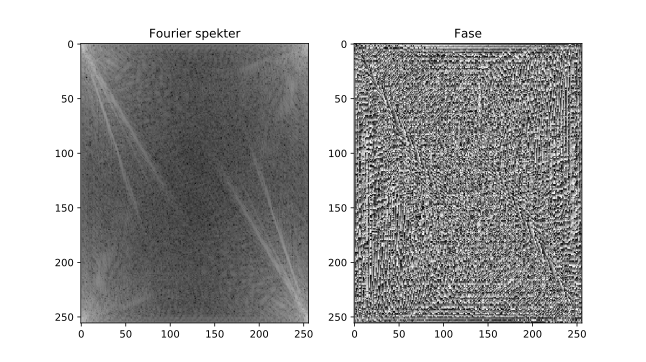
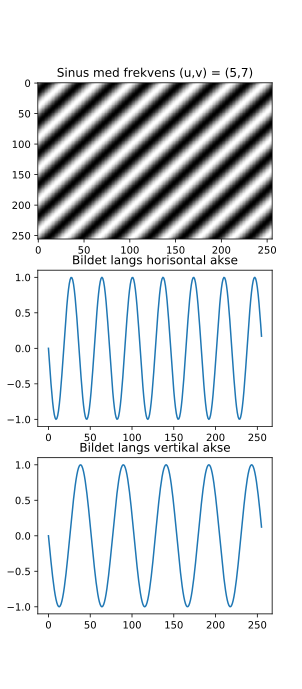
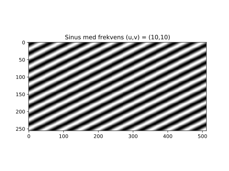
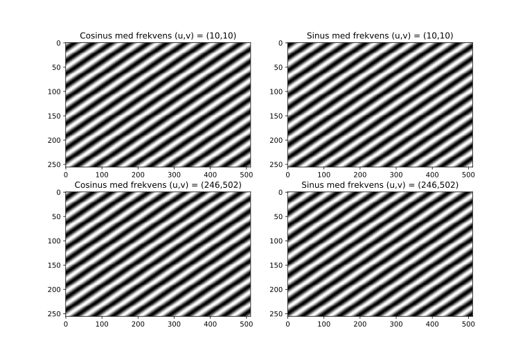
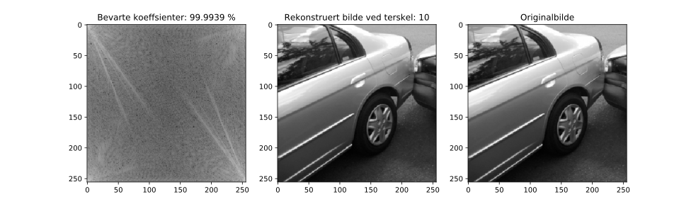
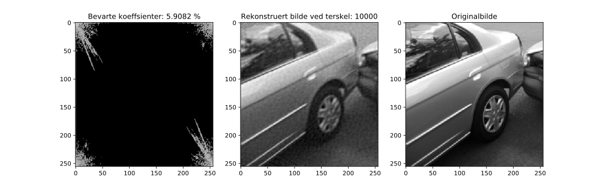
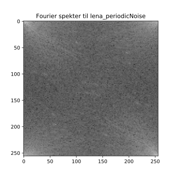
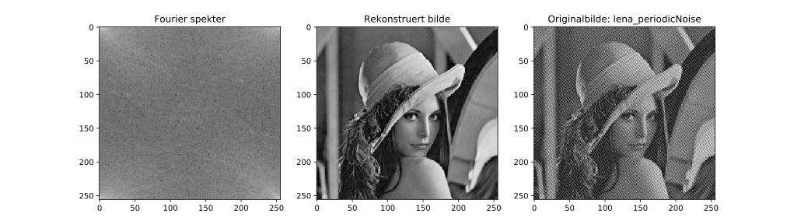
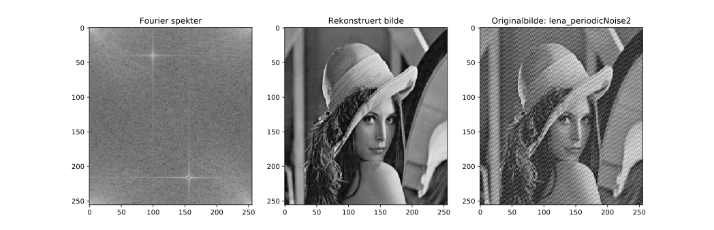

Modul brukt til å lage basisbildene
Oppgave 1
Resultater
Oppgave 2
Resultater
Oppgave 3
Resultater
Oppgave 4
Resultater
import numpy as np
def lag_basis(u,v,M,N,sinus=True):
y = np.tile(np.arange(0,N),(M,1)) # np.tile tilsvarer matlabs repmat
x = np.tile(np.reshape(np.arange(0,M),(M,1)),(1,N))
if sinus:
return np.sin(-2*np.pi*(u/M*x + v/N*y))
return np.cos(2*np.pi*(u/M*x + v/N*y))
Programmet kan lastes ned her.
Denne funksjonen er ment for å generere et sinus- eller cosinus- bilde med en spesifisert frekvens (u,v) og bildestørrelse \( M \times N \).
import numpy as np
from numpy.fft import fft2,ifft2,fftshift
import matplotlib.pyplot as plt
from scipy.misc import imread
from basisbilder import *
# a
img = imread('car.png',flatten=True)
img_fft = fft2(img)
img_angle = np.arctan2(np.real(img_fft),np.imag(img_fft))
plt.figure()
plt.subplot(1,2,1)
plt.imshow(np.log(np.abs(img_fft) + 1),cmap='gray',aspect='auto')
plt.title('Fourier spekter')
plt.subplot(1,2,2)
plt.imshow(img_angle*180/np.pi,cmap='gray',aspect='auto')
plt.title('Fase')
# b
img_dc = img_fft[0,0]
img_sum = np.sum(img)
print("img[0,0] = %g"%abs(img_dc)) # Merk at img_fft er kompleks.
# Det gjør at det kommer en advarsel i terminalen
# ved kjøring av programmet.
# Imaginærdel skal være 0 (eller såpass lite at det tilnærmes lik 0).
# Kan bruke abs for å fjerne advarsel.
print("sum(img) = %g\n"%img_sum)
# c
u,v = 5,7
N = img.shape[0] # siden vi får vite at bildet er kvadratisk
# lage sinus-bilde:
sin_img = lag_basis(u,v,N,N)
# plott resultatene:
plt.figure()
plt.subplot(3,1,1)
plt.imshow(sin_img,cmap='gray',aspect='auto')
plt.title('Sinus med frekvens (u,v) = (%d,%d)'%(u,v))
plt.subplot(3,1,2)
plt.title('Bildet langs horisontal akse')
plt.plot(sin_img[0,:])
plt.subplot(3,1,3)
plt.title('Bildet langs vertikal akse')
plt.plot(sin_img[:,0])
# d
img_mult = np.sum(img*sin_img)
print("sum(img*sin_img) = %g"%img_mult)
print("imag(F(5,7)) = %g\n"%np.imag(img_fft[u,v]))
# e
# lage cosinus-bilde:
cos_img = lag_basis(u,v,N,N,False)
img_mult = np.sum(img*cos_img)
print("sum(img*cos_img) = %g"%img_mult)
print("real(F(5,7)) = %g"%np.real(img_fft[u,v]))
plt.show()
Programmet kan lastes ned her.

img[0,0] = 7.12076e+06
sum(img) = 7.12076e+06

Én mulig måte å verifisere at sinus-bildet har de ønskede frekvensene langs aksene, er å plotte et "tverrsnitt" av bildet langs den vertikale og horisontale aksen. Da kan en se frekvensen til bildet ved å telle antall topper eller bunner.
En annen mulig måte er å telle antall ganger hvit/sort strek forekommer langs aksene til å anslå hvilke frekvenser sinus-en har langs aksene.
sum(img*sin_img) = 3962.86
imag(F(5,7)) = 3962.86
sum(img*cos_img) = -35160.4
real(F(5,7)) = -35160.4
import matplotlib.pyplot as plt
from basisbilder import *
M = 256; N = 512
# a
u = 10; v = 10
sin_img = lag_basis(u,v,M,N)
plt.figure()
plt.imshow(sin_img,cmap='gray')
plt.title('Sinus med frekvens (u,v) = (%d,%d)'%(u,v))
# b
cos_img = lag_basis(u,v,M,N,False)
print("sum(cos*sin) = %g\n"%np.sum(sin_img*cos_img))
# c
u2,v2 = 86,45
sin2_img = lag_basis(u2,v2,M,N)
cos2_img = lag_basis(u2,v2,M,N,False)
print("sum(cos2*sin2) = %g"%np.sum(sin2_img*cos2_img))
print("sum(cos*sin2) = %g"%np.sum(sin2_img*cos_img))
print("sum(cos*sin2) = %g"%np.sum(sin2_img*cos_img))
print("sum(cos2*sin) = %g"%np.sum(sin_img*cos2_img))
print("sum(cos2*sin) = %g\n"%np.sum(sin_img*cos2_img))
# d
u3,v3 = 246,502
sin3_img = lag_basis(u3,v3,M,N)
cos3_img = lag_basis(u3,v3,M,N,False)
plt.figure()
plt.subplot(2,2,1)
plt.imshow(cos_img,cmap='gray',aspect='auto')
plt.title('Cosinus med frekvens (u,v) = (%d,%d)'%(u,v))
plt.subplot(2,2,2)
plt.imshow(sin_img,cmap='gray',aspect='auto')
plt.title('Sinus med frekvens (u,v) = (%d,%d)'%(u,v))
plt.subplot(2,2,3)
plt.imshow(cos3_img,cmap='gray',aspect='auto')
plt.title('Cosinus med frekvens (u,v) = (%d,%d)'%(u3,v3))
plt.subplot(2,2,4)
plt.imshow(sin3_img,cmap='gray',aspect='auto')
plt.title('Sinus med frekvens (u,v) = (%d,%d)'%(u3,v3))
if np.all(np.abs(sin3_img - (-sin_img)) < 1e-10):
print("sinus med frekvens (%d,%d) = - sinus med frekvens (%d,%d)"%(u,v,u3,v3))
if np.all(np.abs(cos3_img - cos_img) < 1e-10):
print("cosinus med frekvens (%d,%d) = cosinus med frekvens (%d,%d)\n"%(u,v,u3,v3))
# e
print("sum(sin*sin) = %g"%np.sum(sin_img*sin_img))
print("sum(cos*cos) = %g"%np.sum(cos_img*cos_img))
plt.show()
Programmet kan lastes ned her.

sum(cos*sin) = 7.77227e-13
sum(cos2*sin2) = 7.66165e-13
sum(cos*sin2) = -1.50413e-12
sum(cos*sin2) = -1.50413e-12
sum(cos2*sin) = 6.57252e-13
sum(cos2*sin) = 6.57252e-13

sinus med frekvens (10,10) = - sinus med frekvens (246,502)
cosinus med frekvens (10,10) = cosinus med frekvens (246,502)
sum(sin*sin) = 65536
sum(cos*cos) = 65536
import numpy as np
from numpy.fft import fft2,ifft2,fftshift
import matplotlib.pyplot as plt
from scipy.misc import imread
img = imread('car.png',flatten=True)
img_fft = fft2(img)
thr = 1
for i in range(1,7):
img_thr = img_fft.copy()
img_thr[np.abs(img_fft) < thr] = 0
img_recon = ifft2(img_thr)
plt.figure()
plt.subplot(1,3,1)
plt.imshow(np.log(np.abs(img_thr)+1),cmap='gray',aspect='auto')
plt.title('Bevarte koeffsienter: %g %%'%(np.sum(img_thr != 0)/img.size*100))
plt.subplot(1,3,2)
plt.imshow(np.abs(img_recon),cmap='gray',aspect='auto')
plt.title('Rekonstruert bilde ved terskel: %d'%thr)
plt.subplot(1,3,3)
plt.imshow(img,cmap='gray',aspect='auto')
plt.title('Originalbilde')
thr *= 10
plt.show()
Programmet kan lastes ned her.


import numpy as np
import matplotlib.pyplot as plt
from scipy.misc import imread
from numpy.fft import fft2,ifft2,fftshift
img = imread('lena_periodicNoise.png',flatten=True)
# a
img_fft = fft2(img)
plt.figure()
plt.imshow(np.log(np.abs(img_fft) + 1),cmap='gray')
plt.title('Fourier spekter til lena_periodicNoise')
# b
N,M = img.shape
u1,v1 = 40,100
u2,v2 = 60,196
u1_,v1_ = N-u1,M-v1 # bruker at fourier-bildet er konjugert symmetrisk
u2_,v2_ = N-u2,M-v2
img_fft[[u1,u1_,u2,u2_],[v1,v1_,v2,v2_]] = 0
img_recon = np.abs(ifft2(img_fft))
plt.figure()
plt.subplot(1,3,1)
plt.imshow(np.log(np.abs(img_fft) + 1),cmap='gray',aspect='auto')
plt.title('Fourier spekter')
plt.subplot(1,3,2)
plt.imshow(img_recon,cmap='gray',aspect='auto')
plt.title('Rekonstruert bilde')
plt.subplot(1,3,3)
plt.imshow(img,cmap='gray',aspect='auto')
plt.title('Originalbilde: lena_periodicNoise')
# c
img = imread('lena_periodicNoise2.png',flatten=True)
N,M = img.shape
img_fft = fft2(img)
plt.figure()
plt.subplot(1,2,1)
plt.imshow(np.log(np.abs(img_fft) + 1),cmap='gray')
plt.title('Fourier spekter til lena_periodicNoise2')
plt.subplot(1,2,2)
plt.imshow(img,cmap='gray')
plt.title('Originalbilde')
u,v = 40,100
u_,v_ = N-u,M-v
img_fft[[u,u_],[v,v_]] = 0
plt.figure()
plt.subplot(1,3,1)
plt.imshow(np.log(np.abs(img_fft) + 1),cmap='gray',aspect='auto')
plt.title('Fourier spekter')
plt.subplot(1,3,2)
plt.imshow(img_recon,cmap='gray',aspect='auto')
plt.title('Rekonstruert bilde')
plt.subplot(1,3,3)
plt.imshow(img,cmap='gray',aspect='auto')
plt.title('Originalbilde: lena_periodicNoise2')
plt.show()
Programmet kan lastes ned her.
Dette løsningsforslaget avviker litt fra løsningsforslaget til Matlab-versjonen med tanke på utnulling av Fourierkoeffsienter. Tanken er derimot den samme, og kan utvides til å nulle ut de samme koeffsientene som løsningsforslaget i matlab.


